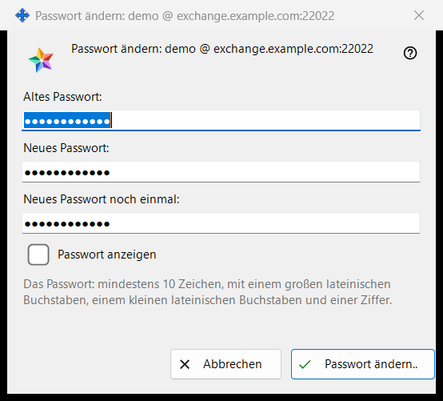
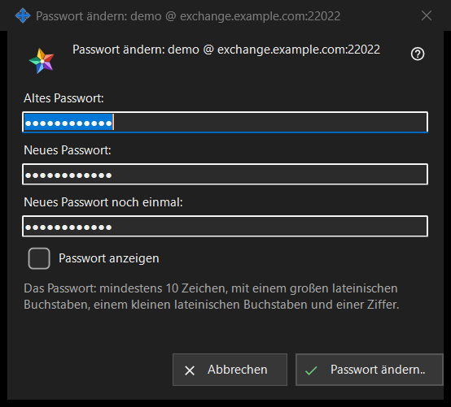

Passwort ändern
Verwendungszweck
Ändert das Passwort des Austauschkontos, bei dem dieser PC angemeldet ist. Das Fenster öffnet sich über «Passwort ändern..» in der Gruppe «Austauschkonto» der Einstellungen des Share Manager, einer Schaltfläche, die nur bei verbundenem Konto angezeigt wird. Der Fenstertitel nennt das Konto als Login @ Server. Das Fenster sendet selbst nichts: Es prüft Ihre Eingabe und gibt sie zurück, die Verbindung dieses PCs sendet sie, und der Server hat das letzte Wort.


In dieser Reihenfolge
- Suchen Sie in den Einstellungen des Share Manager die Gruppe «Austauschkonto» und klicken Sie auf «Passwort ändern..».
- Geben Sie bei «Altes Passwort:» das alte Passwort ein.
- Geben Sie bei «Neues Passwort:» das neue Passwort ein und wiederholen Sie es bei «Neues Passwort noch einmal:».
- Setzen Sie das Häkchen bei «Passwort anzeigen», um die drei Felder zu prüfen.
- Klicken Sie auf «Passwort ändern..»; erscheint eine Warnzeile, korrigieren Sie das Feld und klicken Sie erneut.
- Lesen Sie die Antwort, die in der Gruppe angezeigt wird.
Die Elemente
Die drei Felder
Das alte Passwort, das neue und das wiederholte neue. Alle drei sind maskiert; das eine Häkchen «Passwort anzeigen» macht sie gemeinsam sichtbar und wird nicht gemerkt. Beim Schließen des Fensters werden die Felder geleert.
Die Passwortregel
Die Zeile unter den Feldern lautet: «Das Passwort: mindestens 10 Zeichen, mit einem großen lateinischen Buchstaben, einem kleinen lateinischen Buchstaben und einer Ziffer.» Das Fenster prüft sie sofort, sodass Sie eine Antwort bekommen, bevor etwas gesendet wird.
Die Warnzeile
Die Schaltfläche prüft in dieser Reihenfolge: «Geben Sie das alte Passwort an.», «Die beiden Passwörter stimmen nicht überein.», dann die Regel: «Das Passwort ist kürzer als 10 Zeichen.», «Das Passwort hat keinen großen lateinischen Buchstaben.», «Das Passwort hat keinen kleinen lateinischen Buchstaben.», «Das Passwort hat keine Ziffer.». Das erste Problem beendet die Prüfung, das Fenster bleibt offen und nichts wird gesendet.
Was nach dem Klicken passiert
Eine gültige Eingabe schließt das Fenster, und die Gruppe zeigt die Antwort. Erfolg: «Das Passwort ist geändert. Dieser Computer arbeitet weiter, und die anderen Geräte des Kontos müssen sich neu anmelden.» Weitere Antworten: «Das alte Passwort stimmt nicht.», «Zu viele Versuche. Warten Sie eine Minute und versuchen Sie es erneut.», «Der Server hat die Passwortänderung abgelehnt.» und «Es gibt keine Verbindung zum Server. Verbinden Sie sich und versuchen Sie es erneut.». Lehnt der Server ein schwaches Passwort ab, wird sein eigener Satz angezeigt.
Abbrechen und Tasten
«Abbrechen» oder Esc schließt das Fenster und ändert nichts; Enter drückt «Passwort ändern..».
Managereinstellungen · SFTP-Freigabeeinstellungen · Einstellungen des Austauschservers